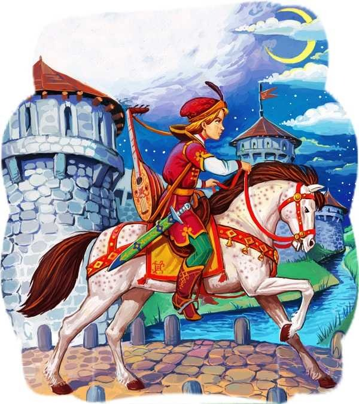

Сказка о молодильных яблоках и живой воде

В некотором царстве, в некотором государстве жил да был царь, и было у него три сына: старшего звали Федором, второго Василием, а младшего Иваном.
Царь очень устарел и глазами обнищал, а слыхал он, что за тридевять земель, в тридесятом царстве есть сад с молодильными яблоками и колодец с живой водой. Если съесть старику это яблоко — помолодеет, а водой этой умыть глаза слепцу — будет видеть.
Царь собирает пир на весь мир, зовет на пир князей и бояр и говорит им:
— Кто бы, ребятушки, выбрался из избранников, выбрался из охотников, съездил за тридевять земель, в тридесятое царство, привез бы молодильных яблок и живой воды кувшинец о двенадцати рылец? Я бы этому седоку полцарства отписал.
Тут больший стал хорониться за середнего, а середний за меньшого, а от меньшого ответу нет.
Выходит царевич Федор и говорит:
— Неохота нам в люди царство отдавать. Я поеду в эту дорожку, привезу тебе, царю-батюшке, молодильных яблок и живой воды кувшинец о двенадцати рылец.
Пошел Федор-царевич на конюший двор, выбирает себе коня неезженого, уздает узду неузданую, берет плетку нехлестаную, кладет двенадцать подпруг с подпругою — не ради красы, а ради крепости… Отправился Федор-царевич в дорожку. Видели, что садился, а не видели, в кою сторону укатился…
Ехал он близко ли, далеко ли, низко ли, высоко ли, ехал день до вечеру — красна солнышка до закату. И доезжает до росстаней, до трех дорог. Лежит на росстанях плита-камень, на ней надпись написана:
«Направо поедешь — себя спасать, коня потерять. Налево поедешь — коня спасать, себя потерять. Прямо поедешь — женату быть».
Поразмыслил Федор-царевич: — «Давай поеду — где женату быть».
И повернул на ту дорожку, где женатому быть. Ехал, ехал и доезжает до терема под золотой крышей. Тут выбегает прекрасная девица и говорит ему:
— Царский сын, я тебя из седла выну, иди со мной хлеба-соли откушать и спать-почивать.
— Нет, девица, хлеба-соли я не хочу, а сном мне дороги не скоротать. Мне надо вперед двигаться.
— Царский сын, не торопись ехать, а торопись делать, что тебе любо-дорого.
Тут прекрасная девица его из седла вынула и в терем повела. Накормила его, напоила и спать на кровать положила.
Только лег Федор-царевич к стенке, эта девица живо кровать повернула, он и полетел в подполье, в яму глубокую…
Долго ли, коротко ли, — царь опять собирает пир, зовет князей и бояр и говорит им:
— Вот, ребятушки, кто бы выбрался из охотников — привезти мне молодильных яблок и живой воды кувшинец о двенадцати рылец? Я бы этому седоку полцарства отписал.
Тут опять больший хоронится за середнего, а середний за меньшого, а от меньшого ответу нет.
Выходит второй сын, Василий-царевич:
— Батюшка, неохота мне царство в чужие руки отдавать. Я поеду в дорожку, привезу эти вещи, сдам тебе в руки.
Идет Василий-царевич на конюший двор, выбирает коня неезженого, уздает узду неузданую, берет плетку нехлестаную, кладет двенадцать подпруг с подпругою.
Поехал Василий-царевич. Видели, как садился, а не видели, в кою сторону укатился… Вот он доезжает до росстаней, где лежит плита-камень, и видит:
«Направо поедешь-себя спасать, коня потерять. Налево поедешь — коня спасать, себя потерять. Прямо поедешь — женату быть».
Думал, думал Василий-царевич и «поехал дорогой, где женатому быть. Доехал до терема с золотой крышей. Выбегает к нему прекрасная девица и просит его откушать хлеба-соли и лечь почивать.
— Царский сын, не торопись ехать, а торопись делать, что тебе любо-дорого…
Тут она его из седла вынула, в терем повела, накормила, напоила и спать положила.
Только Василий-царевич лег к стенке, она опять повернула кровать, и он полетел в подполье.
А там спрашивают:
— Кто летит?
— Василий-царевич. А кто сидит?
— Федор-царевич.
— Вот, братан, попали!
Долго ли, коротко ли, — в третий раз царь собирает пир, зовет князей и бояр:
— Кто бы выбрался из охотников привезти молодильных яблок и живой воды кувшинец о двенадцати рылец? Я бы этому седоку полцарства отписал.
Тут опять больший хоронится за середнего, середний за меньшого, а от меньшого ответу нет.
Выходит Иван-царевич и говорит:
— Дай мне, батюшка, благословеньице, с буйной головы до резвых ног, ехать в тридесятое царство — поискать тебе молодильных яблок и живой воды, да поискать еще моих братьецев.
Дал ему царь благословеньице. Пошел Иван-царевич в конюший двор — выбрать себе коня по разуму. На которого коня ни взглянет, тот дрожит, на которого руку положит — тот с ног валится…
Не мог выбрать Иван-царевич коня по разуму. Идет повесил буйну голову. Навстречу ему бабушка-задворенка.
— Здравствуй, дитятко, Иван-царевич! Что ходишь кручинен-печален?
— Как же мне, бабушка, не печалиться — не могу найти коня по разуму.
— Давно бы ты меня спросил. Добрый конь стоит закованный в погребу, на цепи железной. Сможешь его взять — будет тебе конь по разуму.
Приходит Иван-царевич к погребу, пнул плиту железную, свернулась плита с погреба. Вскочил ко добру коню, стал ему конь своими передними ногами на плечи. Стоит Иван-царевич — не шелохнется. Сорвал конь железную цепь, выскочил из погреба и Ивана-царевича вытащил. И тут Иван-царевич его обуздал уздою неузданой, оседлал седельцем неезженым, наложил двенадцать подпруг с подпругою — не ради красы, ради славушки молодецкой.
Отправился Иван-царевич в путь-дорогу. Видели, что садится, а не видели, в кою сторону укатился… Доехал он до росстаней и поразмыслил:
«Направо ехать — коня потерять, — куда мне без коня-то? Прямо ехать — женату быть, — не за тем я в путь-дорогу выехал. Налево ехать — коня спасти, — эта дорога самая лучшая для меня».
И поворотил он по той дороге, где коня спасти — себя потерять. Ехал он долго ли, коротко ли, низко ли, высоко ли, по зеленым лугам, по каменным горам, ехал день до вечеру — красна солнышка до закату — и наезжает на избушку.
Стоит избушка на курьей ножке, об одном окошке.
— Избушка, избушка, повернись к лесу задом, ко мне передом! Как мне в тебя зайти, так и выйти.
Избушка повернулась к лесу задом, к Ивану-царевичу передом. Зашел он в нее, а там сидит баба-яга, старых лет. Шелковый кудель мечет, а нитки через грядки бреет.
— Фу, фу, — говорит, — русского духу слыхом не слыхано, видом не видано, а нынче русский дух сам пришел.
А Иван-царевич ей:
— Ах ты, баба-яга, костяная нога, не поймавши птицу — теребишь, не узнавши молодца — хулишь. Ты бы сейчас вскочила да меня, добра молодца, дорожного человека, накормила, напоила и для ночи постелю собрала. Я бы улегся, ты бы села к изголовью, стала бы спрашивать, а я бы стал сказывать — чей да откуда.
Вот баба-яга это дело все справила — Ивана-царевича накормила, напоила и на постелю уложила. Села к изголовью и стала спрашивать:
— Чей ты, дорожный человек, добрый молодец, да откуда? Какой ты земли? Какого отца, матери сын?
— Я, бабушка, из такого-то царства, из такого-то государства, царский сын Иван-царевич. Еду за тридевять земель, за тридевять озер, в тридесятое царство за живой водой и молодильными яблоками.
— Ну, дитя мое милое, далеко же тебе ехать: живая вода и молодильные яблоки — у сильной богатырки девицы Синеглазки, она мне родная племянница. Не знаю, получишь ли ты добро…
— А ты, бабушка, дай свою голову моим могутным плечам, направь меня на ум-разум.
— Много молодцев проезживало, да не много вежливо говаривало. Возьми, дитятко, моего коня. Мой конь будет бойчее, довезет он тебя до моей середней сестры, она тебя научит.
Иван-царевич поутру встает ранехонько, умывается белешенько. Благодарит бабу-ягу за ночлег и поехал на ее коне.
Вдруг он и говорит коню:
— Стой! Перчатку обронил.
А конь отвечает:
— В кою пору ты говорил, я уже двести верст проскакал…
Едет Иван-царевич близко ли, далеко ли. День до ночи коротается. И завидел он впереди избушку на курьей ножке, об одном окошке.
— Избушка, избушка, повернись к лесу задом, ко мне передом! Как мне в тебя зайти, так и выйти.
Избушка повернулась к лесу задом, к нему передом. Вдруг слышно — конь заржал, и конь под Иваном-царевичем откликнулся.
Кони-то были одностадные. Услышала это баба-яга — еще старее той — и говорит:
— Приехала ко мне, видно, сестрица в гости.
И выходит на крыльцо:
— Фу-фу, русского духу слыхом не слыхано, видом не видано, а нынче русский дух сам пришел.
А Иван-царевич ей:
— Ах ты, баба-яга, костяная нога, встречай гостя по платью, провожай по уму. Ты бы моего коня убрала, меня бы, добра молодца, дорожного человека, накормила, напоила и спать уложила…
Баба-яга это дело все справила — коня убрала, а Ивана-царевича накормила, напоила, на постелю уложила и стала спрашивать, кто он да откуда и куда путь держит.
— Я, бабушка, из такого-то царства, из такого-то государства, царский сын Иван-царевич. Еду за живой водой и молодильными яблоками к сильной богатырке, девице Синеглазке…
— Ну, дитя милое, не знаю, получишь ли ты добро.
Мудро тебе, мудро добраться до девицы Синеглазки!
— А ты, бабушка, дай свою голову моим могутным плечам, направь меня на ум-разум.
— Много молодцев проезживало, да не много вежливо говаривало. Возьми, дитятко, моего коня, поезжай к моей старшей сестре. Она лучше меня научит, что делать.
Вот Иван-царевич заночевал у этой старухи, поутру встает ранехонько, умывается белешенько. Благодарит бабу-ягу за ночлег и поехал на ее коне. А этот конь еще бойчей того.
Вдруг Иван-царевич говорит:
— Стой! Перчатку обронил.
А конь отвечает:
— В кою пору ты говорил, я уж триста верст проскакал…
Не скоро дело делается, скоро сказка сказывается. Едет Иван-царевич день до вечера — красна солнышка до закату. Наезжает на избушку на курьей ножке, об одном окошке.
— Избушка, избушка, обернись к лесу задом, ко мне передом! Мне не век вековать, а одну ночь ночевать.
Вдруг заржал конь, и под Иваном-царевичем конь откликнулся. Выходит на крыльцо баба-яга, старых лет, еще старее той. Поглядела — конь ее сестры, а седок чужестранный, молодец прекрасный…
Тут Иван-царевич вежливо ей поклонился и ночевать попросился. Делать нечего! Ночлега с собой не возят — ночлег каждому: и пешему и конному, и бедному и богатому.
Баба-яга все дело справила — коня убрала, а Ивана-царевича накормила, напоила и стала спрашивать, кто он да откуда и куда путь держит.
— Я, бабушка, такого-то царства, такого-то государства, царский сын Иван-царевич. Был у твоей младшей сестры, она послала к середней, а середняя к тебе послала. Дай свою голову моим могутным плечам, направь меня на ум-разум, как мне добыть у девицы Синеглазки живой воды и молодильных яблок.
— Так и быть, помогу я тебе, Иван-царевич. Девица Синеглазка, моя племянница, — сильная и могучая богатырка. Вокруг ее царства — стена три сажени вышины, сажень толщины, у ворот стража — тридцать богатырей. Тебя и в ворота не пропустят. Надо тебе ехать в середину ночи, ехать на моем добром коне. Доедешь до стены — бей коня по бокам плетью нехлестаной. Конь через стену перескочит. Ты коня привяжи и иди в сад. Увидишь яблоню с молодильными яблоками, а под яблоней колодец. Три яблока сорви, а больше не бери. И зачерпни из колодца живой воды кувшинец о двенадцати рылец. Девица Синеглазка будет спать, ты в терем к ней не заходи, а садись на коня и бей его по крутым бокам. Он тебя через стену перенесет.
Иван-царевич не стал ночевать у этой старухи, а сел на ее доброго коня и поехал в ночное время. Этот конь поскакивает, мхи-болота перескакивает, реки, озера хвостом заметает.
Долго ли, коротко ли, низко ли, высоко ли, доезжает Иван-царевич в середине ночи до высокой стены. У ворот стража спит — тридцать могучих богатырей. Прижимает он своего доброго коня, бьет его плетью нехлестаной. Конь осерчал и перемахнул через стену. Слез Иван-царевич с коня, входит в сад и видит — стоит яблоня с серебряными листьями, золотыми яблоками, а под яблоней колодец. Иван-царевич сорвал три яблока, а больше не стал брать да зачерпнул из колодца живой воды кувшинец о двенадцати рылец. И захотелось ему самою увидать, сильную, могучую, богатырку, девицу Синеглазку.
Входит Иван-царевич в терем, а там спят — по одну сторону шесть полениц — девиц-богатырок и по другую сторону шесть, а посредине разметалась девица Синеглазка, спит, как сильный речной порог шумит.
Не стерпел Иван-царевич, приложился, поцеловал ее и вышел… Сел на доброго коня, а конь говорит ему человеческим голосом:
— Не послушался, ты, Иван-царевич, вошел в терем к девице Синеглазке. Теперь мне стены не перескочить.
Иван-царевич бьет коня плетью нехлестаной.
— Ах ты, конь, волчья сыть, травяной мешок, нам здесь не ночь ночевать, а голову потерять!
Осерчал конь пуще прежнего и перемахнул через стену, да задел об нее одной подковой — на стене струны запели и колокола зазвонили.
Девица Синеглазка проснулась да увидала покражу:
— Вставайте, у нас покража большая!
Велела она оседлать своего богатырского коня и кинулась с двенадцатью поленицами в погоню за Иваном-царевичем.
Гонит Иван-царевич во всю прыть лошадиную, а девица Синеглазка гонит за ним. Доезжает он до старшей бабы-яги, а у нее уже конь выведенный, готовый. Он — со своего коня да на этого и опять вперед погнал… Иван то царевич за дверь, а девица Синеглазка — в дверь и спрашивает у бабы-яги:
— Бабушка, здесь зверь не прорыскивал ли?
— Нет, дитятко.
— Бабушка, здесь молодец не проезживал ли?
— Нет, дитятко. А ты с пути-дороги поешь молочка.
— Поела бы я, бабушка, да долго корову доить.
— Что ты, дитятко, живо справлюсь…
Пошла баба-яга доить корову — доит, не торопится. Поела девица Синеглазка молочка и опять погнала за Иваном-царевичем.
Доезжает Иван-царевич до середней бабы-яги, коня сменил и опять погнал. Он — за дверь, а девица Синеглазка — в дверь:
— Бабушка, не проскакивал ли зверь, не проезжал ли добрый молодец?
— Нет, дитятко. А ты бы с пути-дороги поела блинков.
— Да ты долго печь будешь.
— Что ты, дитятко, живо справлю…
Напекла баба-яга блинков — печет, не торопится. Девица Синеглазка поела и опять погнала за Иваном-царевичем.
Он доезжает до младшей бабы-яги, слез с коня, сел на своего коня богатырского и опять погнал. Он — за дверь, девица Синеглазка — в дверь и спрашивает у бабы-яги, не проезжал ли добрый молодец.
— Нет, дитятко. А ты бы с пути-дороги в баньке попарилась.
— Да ты долго топить будешь.
— Что ты, дитятко, живо справлю…
Истопила баба-яга баньку, все изготовила. Девица Синеглазка попарилась, обкатилась и опять погнала в сугон. Конь ее с горки на горку поскакивает, реки, озера хвостом заметает. Стала она Ивана-царевича настигать.
Он видит за собой погоню: двенадцать богатырок с тринадцатой — девицей Синеглазкой — ладят на него наехать, с плеч голову снять. Стал он коня приостанавливать, девица Синеглазка наскакивает и кричит ему:
— Что ж ты, вор, без спросу из моего колодца пил да колодец не прикрыл!
А он ей:
— Что ж, давай разъедемся на три прыжка лошадиных, давай силу пробовать.
Тут Иван-царевич и девица Синеглазка заскакали на три прыжка лошадиных, брали палицы боевые, копья долгомерные, сабельки острые. И съезжались три раза, палицы поломали, копья-сабли исщербили — не могли друг друга с коня сбить. Незачем стало им на добрых конях разъезжаться, соскочили они с коней и схватились в охапочку.
Боролись с утра до вечера — красна солнышка до закату. У Ивана-царевича резва ножка подвернулась, упал он на сыру землю. Девица Синеглазка стала коленкой на его белу грудь и вытаскивает кинжалище булатный — пороть ему белу грудь. Иван-царевич и говорит ей:
— Не губи ты меня, девица Синеглазка, лучше возьми за белые руки, подними со сырой земли, поцелуй в уста сахарные.
Тут девица Синеглазка подняла Ивана-царевича со сырой земли и поцеловала в уста сахарные. И раскинули они шатер в чистом поле, на широком раздолье, на зеленых лугах. Тут они гуляли три дня и три ночи. Здесь они и обручились и перстнями обменялись.
Девица Синеглазка ему говорит:
— Я поеду домой — и ты поезжай домой, да смотри никуда не сворачивай… Через три года жди меня в своем царстве.
Сели они на коней и разъехались… Долго ли, коротко ли, не скоро дело делается, скоро сказка сказывается, — доезжает Иван-царевич до росстаней, до трех дорог, где плита-камень, и думает:
«Вот нехорошо! Домой еду, а братья мои пропадают без вести».
И не послушался он девицы Синеглазки, своротил на ту дорогу, где женатому быть… И наезжает на терем под золотой крышей. Тут под Иваном-царевичем конь заржал, и братьевы кони откликнулись. Кони-то были одностадные…
Иван-царевич взошел на крыльцо, стукнул кольцом — маковки на тереме зашатались, оконницы покривились. Выбегает прекрасная девица.
— Ах, Иван-царевич, давно я тебя поджидаю! Иди со мной хлеба-соли откушать и спать-почивать.
Повела его в терем и стала потчевать. Иван-царевич, не столько ест, сколько под стол кидает, не столько пьет, сколько под стол льет. Повела его прекрасная девица в спальню:
— Ложись, Иван-царевич, спать-почивать.
А Иван-царевич столкнул ее на кровать, живо кровать повернул, девица и полетела в подполье, в яму глубокую.
Иван-царевич наклонился над ямой и кричит:
— Кто там живой?
А из ямы отвечают:
— Федор-царевич да Василий-царевич.
Он их из ямы вынул — они лицом черны, землей уж стали порастать. Иван-царевич умыл братьев живой водой — стали они опять прежними.
Сели они на коней и поехали… Долго ли, коротко ли, доехали до росстаней. Иван-царевич и говорит братьям:
— Покараульте моего коня, а я лягу отдохну.
Лег он на шелковую траву и богатырским сном заснул. А Федор-царевич и говорит Василию-царевичу:
— Вернемся мы без живой воды, без молодильных яблок — будет нам мало чести, нас отец пошлет гусей пасти.
Василий-царевич отвечает:
— Давай Ивана-царевича в пропасть спустим, а эти вещи возьмем и отцу в руки отдадим.
Вот они у него из-за пазухи вынули молодильные яблоки и кувшин с живой водой, а его взяли и бросили в пропасть. Иван-царевич летел туда три дня и три ночи.
Упал Иван-царевич на самое взморье, опамятовался и видит — только небо и вода, и под старым дубом у моря птенцы пищат — бьет их погода.
Иван-царевич снял с себя кафтан и птенцов покрыл, а сам укрылся под дуб.
Унялась погода, летит большая птица Нагай. Прилетела, под дуб села и спрашивает птенцов:
— Детушки мои милые, не убила ли вас погодушка-ненастье?
— Не кричи, мать, нас сберег русский человек, своим кафтаном укрыл.
Птица Нагай спрашивает Ивана-царевича:
— Для чего ты сюда попал, милый человек?
— Меня родные братья в пропасть бросили за молодильные яблоки да за живую воду.
— Ты моих детей сберег, спрашивай у меня, чего хочешь: злата ли, серебра ли, камня ли драгоценного.
— Ничего, Нагай-птица, мне не надо: ни злата, ни серебра, ни камня драгоценного. А нельзя ли мне попасть в родную сторону?
Нагай-птица ему отвечает:
— Достань мне два чана — пудов по двенадцати — мяса.
Вот Иван-царевич настрелял на взморье гусей, лебедей, в два чана поклал, поставил один чан Нагай-птице на правое плечо, а другой чан — на левое, сам сел ей на хребет. Стал птицу Нагай кормить, она поднялась и летит в вышину.
Она летит, а он ей подает да подает… Долго ли, коротко ли так летели, скормил Иван-царевич оба чана. А птица Нагай опять оборачивается. Он взял нож, отрезал у себя кусок с ноги и Нагай-птице подал. Она летит, летит и опять оборачивается. Он с другой ноги срезал мясо и подал. Вот уже недалеко лететь осталось. Нагай-птица опять оборачивается. Он с груди у себя мясо срезал и ей подал.
Тут Нагай-птица донесла Ивана-царевича до родной стороны.
— Хорошо ты кормил меня всю дорогу, но слаще последнего кусочка отродясь не едала.
Иван-царевич ей и показывает раны. Нагай-птица рыгнула, три куска вырыгнула:
— Приставь на место.
Иван-царевич приставил — мясо и приросло к костям.
— Теперь слезай с меня, Иван-царевич, я домой полечу.
Поднялась Нагай-птица в вышину, а Иван-царевич пошел путем-дорогой на родную сторону.
Пришел он в столицу и узнает, что Федор-царевич и Василий-царевич привезли отцу живой воды и молодильных яблок и царь исцелился: по-прежнему стал здоровьем крепок и глазами зорок.
Не пошел Иван-царевич к отцу, к матери, а собрал он пьяниц, кабацкой голи и давай гулять по кабакам.
В ту пору за тридевять земель, в тридесятом царстве сильная богатырка Синеглазка родила двух сыновей. Они растут не по дням, а по часам. Скоро сказка сказывается, не скоро дело делается — прошло три года. Синеглазка взяла сыновей, собрала войско и пошла искать Ивана-царевича.
Пришла она в его царство и в чистом поле, в широком раздолье, на зеленых лугах раскинула шатер белополотняный. От шатра дорогу устелила сукнами цветными. И посылает в столицу царю сказать:
— Царь, отдай царевича. Не отдашь, — все царство потопчу, пожгу, тебя в полон возьму.
Царь испугался и посылает старшего – Федора-царевича. Идет Федор-царевич по цветным сукнам, подходит к шатру белополотняному. Выбегают два мальчика:
— Матушка, матушка, это не наш ли батюшка идет?
— Нет, детушки, это ваш дяденька.
— А что прикажешь с ним делать?
— А вы, детушки, угостите его хорошенько.
Тут эти двое пареньков взяли трости и давай хлестать Федора-царевича пониже спины. Били, били, он едва ноги унес.
А Синеглазка опять посылает к царю:
— Отдай царевича…
Пуще испугался царь и посылает середнего — Василия-царевича. Он приходит к шатру. Выбегают два мальчика:
— Матушка, матушка, это не наш ли батюшка идет?
— Нет, детушки, это ваш дяденька. Угостите его хорошенько.
Двое пареньков опять давай дядю тростями чесать. Били, били, Василий-царевич едва ноги унес.
А Синеглазка в третий раз посылает к царю:
— Ступайте, ищите третьего сынка, Ивана-царевича. Не найдете — все царство потопчу, пожгу.
Царь еще пуще испугался, посылает за Федором-царевичем и Василием-царевичем, велит им найти брата, Ивана-царевича. Тут братья упали отцу в ноги и во всем повинились: как у сонного Ивана-царевича взяли живую воду и молодильные яблоки, а самого бросили в пропасть.
Услышал это царь и залился слезами. А в ту пору Иван-царевич сам идет к Синеглазке, и с ним идет голь кабацкая. Они под ногами сукна рвут и в стороны мечут.
Подходит он к белополотняному шатру. Выбегают два мальчика:
— Матушка, матушка, к нам какой-то пьяница идет с голью кабацкой!
А Синеглазка им:
— Возьмите его за белые руки, ведите в шатер. Это ваш родной батюшка. Он безвинно три года страдал.
Тут Ивана-царевича взяли за белые руки, ввели в шатер. Синеглазка его умыла и причесала, одежу на нем сменила и спать уложила. А голи кабацкой по стаканчику поднесла, и они домой отправились.
На другой день Синеглазка и Иван-царевич приехали во дворец. Тут начался пир на весь мир — честным пирком да и за свадебку. Федору-царевичу и Василию-царевичу мало было чести, прогнали их со двора — ночевать где ночь, где две, а третью и ночевать негде…
Иван-царевич не остался здесь, а уехал с Синеглазкой в ее девичье царство.
Тут и сказке конец.